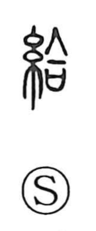

給

Kun: tamau | On: kyuu
to give ・ grant ・ supply ・ salary
Explanation
A phono-semantic character: the thread element signals the realm of goods and distribution, while 合 serves as the phonetic, linked to the 翕 (kyu) sound series with the sense of gathering or bringing together. In bronze inscriptions, 合 can also write 答, meaning an answer or recompense, particularly a return equal to what was received. Against this background, 給 originally expressed the bestowal granted by a superior, then broadened to the general sense of giving, and further extended to ideas of adding and satisfying or meeting a need.